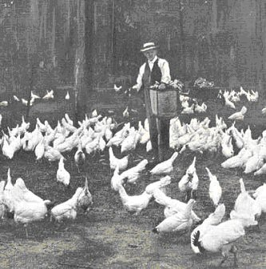

|
TOPICS My blog e-mail me | genl headerLife on a South Jersey Chicken Farmby Alan Singer (based on an interview with Mae Yanowitz, 2007) |
|
From 1946, when I was 4 and
my father got out of the army, until the late 1950s, I lived on two
chicken farms in southern New Jersey. I hated that life, as I
shall describe elsewhere. My mother's
son-in-law/my brother-in-law, Alan Singer, a professor at Hofstra University, interviewed her and composed this account (for a publication
he edits of the New Jersey Council for Social Studies) of
what life on the farm was like. I was born in 1919 in Mount Vernon, New York where I grew up. My father was a traveling salesman until the Great Depression. He was a partner in a business that manufactured women’s coats and suits and he was the one who went on the road. He traveled from store to store, mainly in the south. During the Depression, the business could not support the two partners, my father and my Uncle Hyman, so my father opened a retail store. My mother helped run the store while caring for the house and the children. I graduated from Mt. Vernon High School when I was fifteen-and- a-half. My mother gave me a choice of going to college or work so I decided to go to college for a while. I went to an extension program of the City College of New York in Yonkers. I was not really into college, I wasn’t studying, so I dropped out after two years and went to work. I did sales work at various stores, including a five and ten and became active in union activities. I did volunteer work in the office for District Council 65, went to meetings and gave out leaflets. It was an active union and progressive. We opposed Hitler and supported the Spanish Republic. We also pressed the United States government to provide support for the unemployed and pushed for union recognition. Eventually I went back to college at night and about the same time I was introduced to my future husband, Ed. A friend had intended to introduce me to Ed’s older brother, Hy, who was also a political person. The brothers lived together, but Hy was not home. This must have been when I was twenty. Ed was a furrier’s apprentice but was let go when he finished his apprenticeship. My father got him a job as an errand boy for a button factory but he lost the job when they sent him to make a delivery at a factory that was on strike and he refused to cross the picket line. Then he went to work in new war-related industries until he was drafted. He really hated doing defense work because most of the factories were paid cost-plus. That meant that if they hired more workers, they made more profit, even if the worker wasn’t really working. He was once told to find an inconspicuous place in the plant and take nap! We lived first on the Lower East Side in Manhattan and then moved to the Bronx. Ed initially had a military deferment because we had two children, but eventually he was drafted. I went back to work part-time. Ed’s younger sister lived with us and helped with the children so I could go to work. A little later I put the children in a nursery and worked full time. When Ed was sixteen he had worked on a poultry farm in
Massachusetts and he decided that was what he wanted to do with his life. He
was always a nature lover. From the beginning of our relationship he told me
that he did not want to stay in the city. After Ed came out of the army, with
my father’s help, we bought a poultry farm in South Jersey in Estelle Manor
about ten or twenty miles from Vineland. We shopped for the farm through the Jewish Agricultural
Society which showed us farms that we could afford. We owned the first farm for
five years and then bought a piece of property with just a house and Ed built
chicken coops. We kept this farm until 1962.  Farmer at the
Rancocas Poultry Farm, Brown's Mills, NJ, feeds his birds.
http://www.foodmuseum.com I was really a city girl and chicken farming was a lot of
work. Though I got used to it, I never really liked it. We had a lot of
friends in the area and were involved in the Farmer’s Union so it was not too
bad. Poultry farming is more like a business than other types of farming. We
got up early in the morning, maybe six o’clock, and Ed went out to feed the
chickens and collect the eggs. The process took a couple of hours. After that
there were all kinds of chores that had to be done -- cleaning the waterers,
feeding and collecting eggs twice a day, vaccinating, debeaking, culling
non-layers. There was always something to repair or make. Ed kept a small
garden to grow flowers and fresh vegetables for the family. After the afternoon collection, we used to clean the eggs,
remove cracked and soft-shelled eggs, candle them, sort them for size, and
pack them.. When we started working the farm we had to rub the eggs with a
brush covered with sandpaper to clean them and used to hold the egg up to the
light to make sure they hadn’t been fertilized and then we sorted them by
size. Later we bought a motorized bucket that warmed and agitated water to
wash a basket of eggs at a time in some kind of solution. We also bought a
conveyor belt system on which the eggs would role past a light for candling,
and then were sorted for size by a series of scales. The eggs were hand-fed
onto the machine, but it was still a big improvement in labor. I remember when my daughter Judi was about a year and a
half old and we had just started on the farm she sat down in a basket of eggs
breaking many of them. I was so mad I refused to change her for a while. When
the children got older, about seven or eight, they used to help with the
feeding of the chickens. Gradually we mechanized the farm so you didn’t have
to carry the buckets from the feed bin but could roll them along a track. Like
all farming, the poultry business could be very unprofitable. Chickens got
sick or they stopped laying. The cost of raising laying hens was several times
what the chicken-man would pay if we had to sell them for meat. Farmers had
little control over the price of feed, which kept going up, even though we
belonged to a feed coop. And we had no control over the price of eggs, which
was high when the chickens weren’t laying and low when they were. When things
were going bad you had to keep feeding the chickens even though you could not
get a fair price for the eggs. It wasn’t worth it to sell them for meat
because if the price of eggs went back up it would be too expensive to replace
them. The Farmer’s Union tried to lobby the government for price controls or
subsidies, but was unsuccessful. Larger farms that could mechanize
sufficiently that they could take care of large numbers of hens were able to
stay in business but the small farmers couldn’t make a living and started to
go bankrupt. To keep the family afloat, I went to work in an office. We declared bankruptcy on the farm and Ed and I decided to go back to school to become teachers. While we got our degrees, we operated a soft ice cream stand where our three children all pitched in. Eventually I graduated from Rutgers and got a high school teaching job in Highland Park. Ed graduated from Glassboro State and became a middle school teacher in New Brunswick. | |